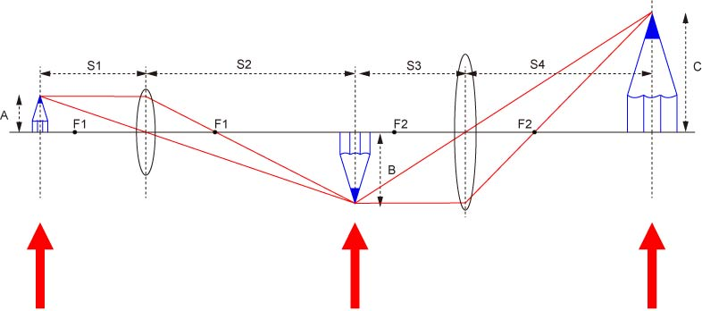

では，次にケーラー照明について説明しましょう．
ケーラー照明は，ドイツのケーラーという人によって考案された照明方法です．
試料に照射する光の量，範囲を非常に賢い方法で調節でき，さらに照明ムラもない，という本当に賢い方法です．
現在の顕微鏡はほとんど自動的にこの照明系となり，我々の調整する余裕は軸調整ぐらいなものです．
ですので，この原理をきちんと理解している人はあまりいないのが現状です．
顕微鏡には，先人の英知がぎゅっ！と詰まっているのに．．．．．．もったいない．
さて，ケーラー照明の説明の前に，まず，
共役点
について説明しましょう．
下の光学系をまずみてください．

これは何度も出てきた顕微鏡の光学系ですね．
ここで，三つの赤い矢印に注目してください．
左と右は物体と結像像ですね．
しかし，中央にも鉛筆の絵が描いてあります．
ここにスクリーンをおいても，もちろん結像させることは可能です．
これら三つの矢印の部分は，拡大率は違いますが，同じ像を得られる場所です．
このような光学的な位置のことを，
共役点
と呼ぶのです．
このことが次に説明するケーラー照明にとって非常に重要な役割を果たします．
このことを利用して，レーザートラップをサンプル上でスキャンさせることも可能となります．
さて，このことをふまえて，次ページからケーラー照明について説明しましょう．